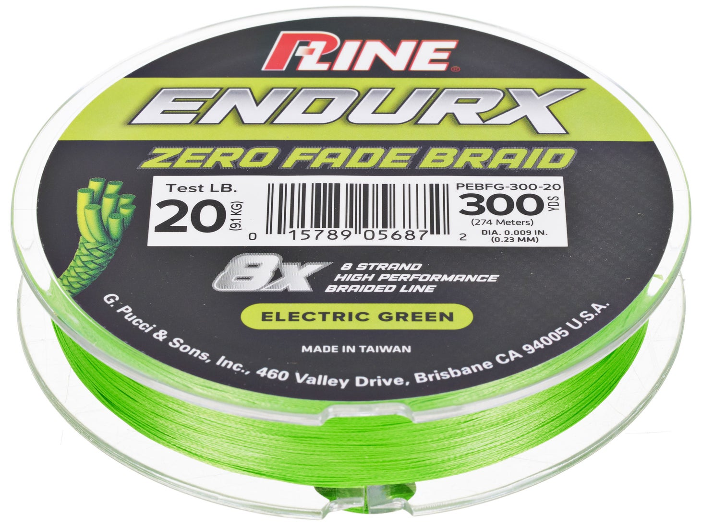

P-Line EndurX Braid
Diameter chart, reel capacity & backing guide

This is the eight-carrier EndurX 8X mainline reference, not an EndurX four-carrier product. The exact US labels are Electric Green 20 lb/300 yd and Midnight Black 30 lb/300 yd. Production years are unestablished; the photographed Zero Fade packaging does not establish the latest edition or current availability.
- Construction
- 8-carrier braid; color introduced before braiding
- Listed strengths
- 20-30 lb
- Line type
- Braid main line
Keep the 8X construction and exact color in view
P-Line describes eight-carrier EndurX as braid made from material colored before braiding. The retained labels support a .009-inch Electric Green 20 lb option and a .011-inch Midnight Black 30 lb option. They do not establish all EndurX colors at those strengths. Compare diameter for capacity while choosing strength, leader, and drag for the fishing; color-retention marketing is not a measured result here.
How much EndurX 8X will fit?
Calculated estimates, not measured fills. Stop at the reel manufacturer's fill level even if some line remains.
P-Line EndurX Braid diameter chart
US 8X labels only: Electric Green PEBFG-300-20, 20 lb, .009 in/.23 mm, 300 yd; Midnight Black PEBB-300-30, 30 lb, .011 in/.28 mm, 300 yd. The newly legible 30 lb inch field is .011, not a retailer .010 entry or a conversion calculated from .28 mm. No four-carrier, other-color, or bulk variant is included.
| Strength | Inches | mm | Spools (yd) |
|---|---|---|---|
| 0.009 | 0.230 | 300 | |
| 0.011 | 0.280 | 300 |
Choosing your EndurX 8X strength
The 20 lb entry is Electric Green; the 30 lb entry is Midnight Black. This is not proof that every color shares either label specification.
Both accepted products say 8X and contain 300 yards. A different carrier count or bulk code needs its own numeric evidence.
More estimated capacity is not automatically useful capacity. Choose enough working braid for casts, runs, and retying, without choosing a lighter strength just to maximize the yard count.
No independent fade, breaking-strength, abrasion, or casting test is claimed. Braid diameter and winding tension make real fills approximate.
Want a guided recommendation?
Continue in the Setup WizardSame pound test, different diameters
At your selected strength
Loading diameter comparisons...
What changes with another line?
Nearby diameters in the line database
| Line | Strength | Inches | Difference |
|---|---|---|---|
| Loading line database... | |||
Backing, working line & leaders
Secure the braid at the arbor
Follow the reel manufacturer's braid-attachment instructions. Where appropriate, a mono base can prevent slipping on a smooth arbor, and additional backing can occupy unused volume.
Do not force a 300-yard fill
Use the intended working length, consistent winding tension, and the reel's fill mark. One 300-yard package is supply, not a requirement that all of it fit on one spool.
Choose the leader separately
A leader goes near the lure, while backing goes below the working braid. Leader material and strength depend on the presentation and cover; a long topshot needs its own volume allowance.
How Much Fits on These Reels?
Estimated full-spool capacity for the EndurX 8X strength selected above, with no backing. These are calculated examples, not physical tests or recommendations for every pairing.
Loading capacity estimates...
EndurX 8X questions, answered
Is this the four-carrier EndurX?
No. The accepted labels identify EndurX 8X, and P-Line's matching description specifies eight carriers. Four-carrier EndurX is outside this reference.
What is the verified 30 lb Midnight Black diameter?
The actual PEBB-300-30 label prints .011 inch and .28 mm. Its 300-yard package is the only 30 lb package included here.
Can I choose Electric Green at 30 lb from this chart?
Not from this evidence. The verified Electric Green package is 20 lb; the verified 30 lb label is Midnight Black. Other color-strength combinations need their own primary evidence.
Does Zero Fade mean this page guarantees color retention?
No. That wording identifies the pictured manufacturer packaging. This reference neither independently tests the claim nor establishes warranty eligibility, production year, or present stock.
Specifications & sources
Actual P-Line spool-label photographs hosted by Tackle Warehouse supply both numeric units and exact package codes. Official US product variants corroborate the model, color, strength, and 300-yard count. Both packages print 274 meters; the official generic 300YD/247M dropdown is not treated as a separate verified metric package. Retailer-authored tables are not numeric authority.
Calculations use the catalog's listed inch diameters. Published inch and millimeter values may differ slightly because of rounding.
- P-Line official US EndurX Braid identity Manufacturer construction and exact variant identity context. This page has no numeric diameter chart; its generic package options do not expand the supported labels.
- P-Line printed package label: 20 lb Electric Green Original third-party-hosted photo; numeric authority is the visible manufacturer's printing. PEBFG-300-20, 300 yd. Photo/production year unestablished. Not a retailer-authored diameter table.
- P-Line printed package label: 30 lb Midnight Black Original third-party-hosted photo; numeric authority is the visible manufacturer's printing. PEBB-300-30, 300 yd. Photo/production year unestablished. Not a retailer-authored diameter table.